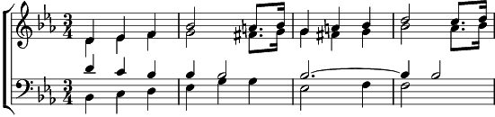

1. Cré-moé, cré-moé pas, quéqu' part en Alaska
Y a un phoque qui s'ennuie en maudit
Sa blonde est partie gagner sa vie
Dans un cirque aux Etats-Unis
Le phoque est tout seul, il r'garde le soleil
Qui descend doucement sur le glacier
Il pense aux Etats en pleurant tout bas
C'est comme ça quand ta blonde t'a lâché
Refrain: Ça vaut pas la peine
De laisser ceux qu'on aime
Pour aller faire tourner
Des ballons sur son nez
Ça fait rire les enfants
Ça dure jamais longtemps
Ça fait plus rire personne
Quand les enfants sont grands
2. Quand le phoque s'ennuie, il r'garde son poil qui brille
Comme les rues de New York après la pluie
Il rêve à Chicago, à Marilyn Monroe
Il voudrait voir sa blonde faire un show
C'est rien qu'une histoire, j'peux pas m'en faire accroire
Mais des fois j'ai l'impression qu'c'est moi
Qui est assis sur la glace les deux mains dans la face
Mon amour est partie puis j'm'ennuie
Refrain